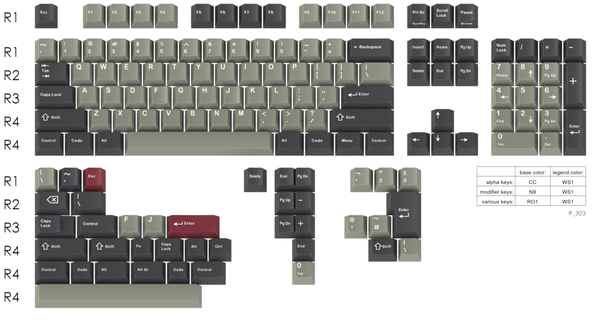
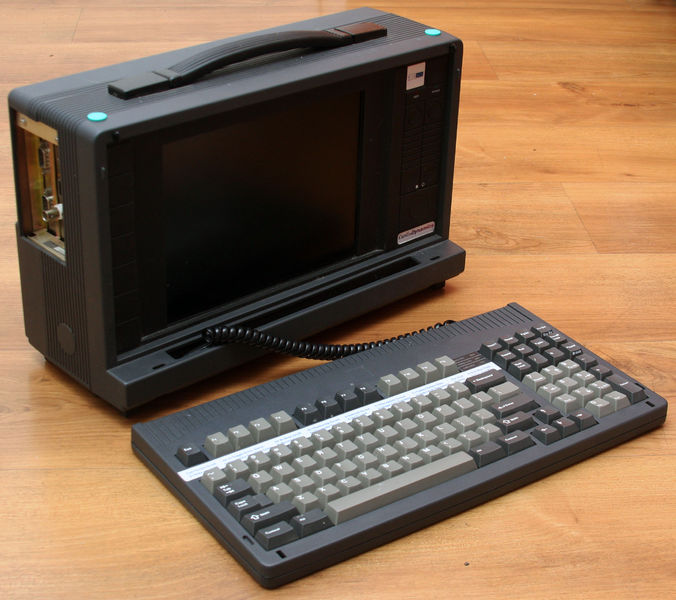
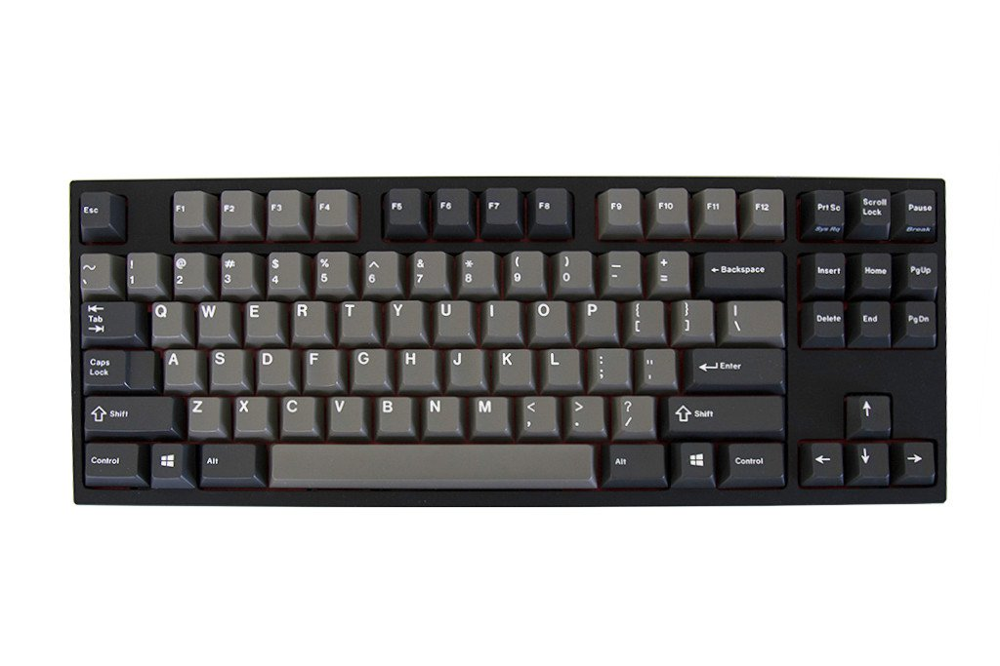
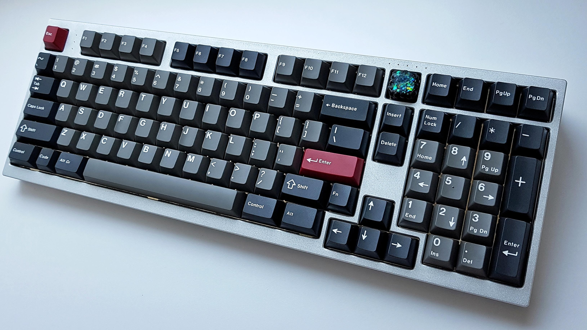
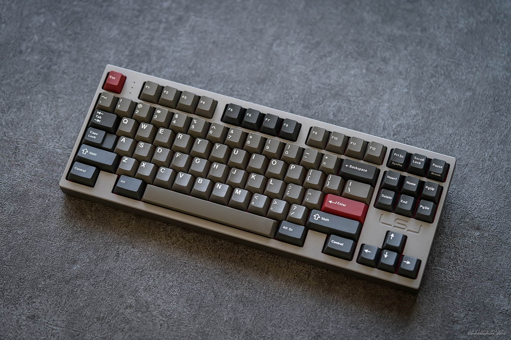

 
Above is the Cherry G80-1813, the original source/design of this colorway.
  
Sources:
Originative Co. (GMK Dolch)
geekhack (GMK DOLCH [COMPLETE])
Deskthority wiki (Cherry G80-1813)
Reddit (/r/MechanicalKeyboards)
GMK Dolch & TheEyeKey Anubis